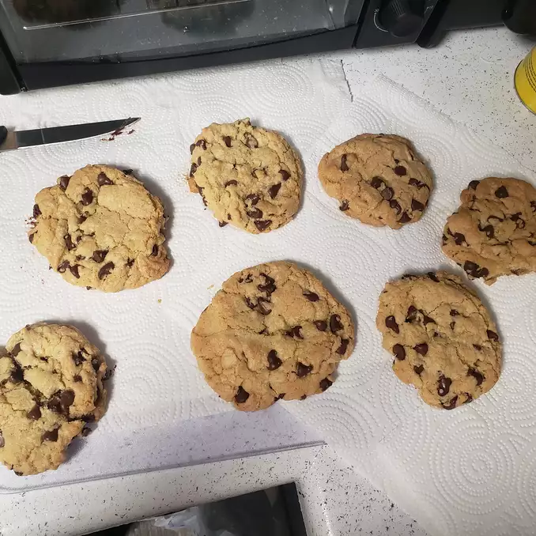

Cookies

Description
This recipe is perfect if you love big, fat, chewy cookies
like the ones you see at bakeries and specialty shops.
Ingredients
- 2 cups all-purpose flour
- 1/2 teaspoon baking soda
- 1/2 teaspoon salt
- 3/4 cup unsalted butter, melted
- 1 cup packed brown sugar
- 1/2 cup white sugar
- 1 tablespoon vanilla extract
- 1 egg
- 1 egg yolk
- 2 cups semisweet chocolate chips
Steps
- Preheat oven to 325 degrees F (165 degrees C). Grease cookie
sheets or line with parchment paper.
- Sift together the flour, baking soda and salt; set aside.
- In a medium bowl, cream together the melted butter, brown sugar
and white sugar until well blended. Beat in the vanilla, egg, and
egg yolk until light and creamy. Mix in the sifted infredients until
just blended. Stir in the chocolate chips by hand using a wooden spoon.
Drop cookie dough 1/4 cup at a time onto the prepared cookie sheets.
Spread cookies about 3 inches apart.
- Bake for 15 to 17 minutes in the preheated oven, or until the edges are
lightly toasted. Cool on baking sheets for a few minutes before transferring
to wire racks to cool completely.